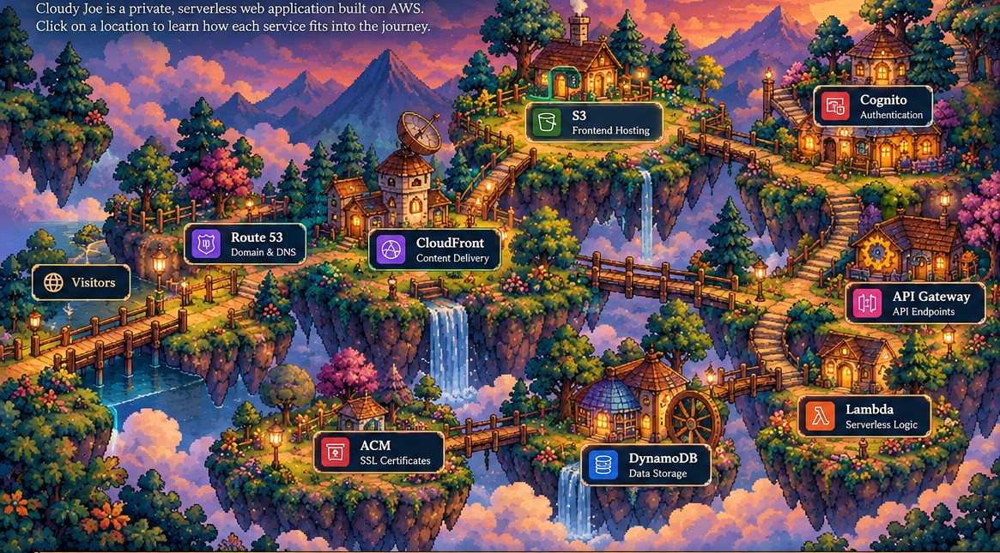

THE CLOUD VILLAGE / UNDER THE HOOD
Explore the Cloud Kingdom
Every place has a purpose. Select a building to discover the AWS services that power this portfolio.

FOLLOW A REQUEST
Two paths through the kingdom
Choose a journey to see how the services work together. Select a step for details.
View the technical architecture
Static website: Browser → Route 53 DNS → CloudFront (HTTPS with ACM certificate) → Private S3 origin
Authentication: Browser ↔ Cognito user pool (OTP sign-in and group membership)
Application API: Browser → API Gateway → Lambda → DynamoDB; protected endpoints validate the appropriate authentication and authorization
Email: The access-request/approval workflow uses Amazon SES to send messages.
Simplified logical flow. DNS resolution, TLS negotiation, caching, and Cognito token exchanges involve additional steps.